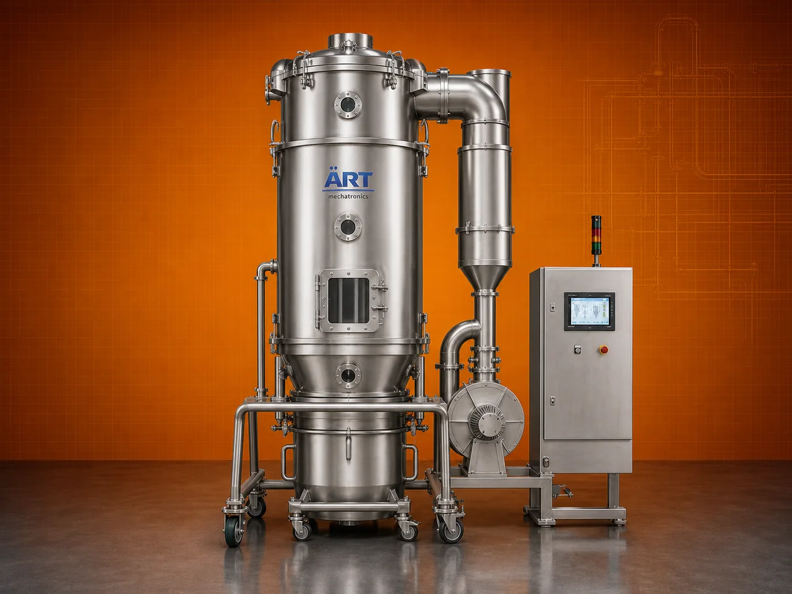

Fluidized Bed Dryer Machine (FBD Dryer for Powder & Granular Material Drying)
A Fluidized Bed Dryer (FBD), also known as a Fluid Bed Dryer, is an advanced drying system used for uniform and rapid drying of powders, granules, and particulate materials using hot air fluidization technology.

About the Fluidized Bed Dryer (FBD)
In this process, material is suspended in an upward flow of hot air, creating a fluid-like state, which ensures excellent heat transfer, uniform drying, and precise moisture control.
FBD dryers are widely used in industries such as pharmaceuticals, food processing, chemicals, nutraceuticals, agro products, and minerals, where consistent product quality and controlled drying are critical.
ART Mechatronics offers high-performance fluidized bed dryers, engineered for efficient drying, energy savings, and reliable industrial operation.
One machine, many names
Buyers search for this equipment under many terms — we manufacture all of them:
Working Principle of Fluidized Bed Dryer
Ensures uniform heat transfer
Types of Fluidized Bed Dryers
Industries Using Fbd Dryer
💊 Pharmaceutical Industry
- Granules
- Medicines
🍃 Food Processing Industry
- Food powders
- Ingredients
⚗️ Chemical Industry
- Chemicals
- Powders
🌿 Nutraceutical Industry
- Health supplements
🌾 Agro Processing Industry
- Seeds
- Granules
🏗️ Mineral Industry
- Fine materials
Features & Advantages
- Rapid and uniform drying
- Excellent heat transfer efficiency
- Precise moisture control
- Suitable for powders and granules
- Energy-efficient operation
- Reduced drying time
- High product quality
Technical Highlights
- Capacity: Custom (kg/hr to tons/hr)
- Drying Type: Fluidized hot air drying
- Temperature Control: Precise control system
- Construction: Mild Steel / Stainless Steel (GMP)
- Airflow System: Blower-driven
- Filtration: Bag filters / HEPA (optional)
Turnkey Fbd Drying Solutions
ART Mechatronics offers:
- Complete drying system design
- Airflow and heat optimization
- GMP-compliant designs (for pharma)
- Installation & commissioning
- After-sales service & AMC
Why Choose Art Mechatronics
- Expertise in advanced drying technologies
- Customized solutions for various industries
- High-performance and energy-efficient systems
- Durable and reliable machines
- Proven performance across applications
Applications
- Pharmaceutical Manufacturing Units
- Food Processing Plants
- Chemical Processing Plants
- Nutraceutical Plants
- Agro Processing Units
Industries that use the Fluidized Bed Dryer (FBD)
Get pricing & specs for the Fluidized Bed Dryer (FBD)
Share the product, target capacity, current process and plant location. These details help our engineers discuss the right machine or line configuration.
One partner, from design to start-up
ART Mechatronics designs, manufactures, installs and commissions your Fluidized Bed Dryer (FBD) solution with regional presence in India, UAE and Thailand.